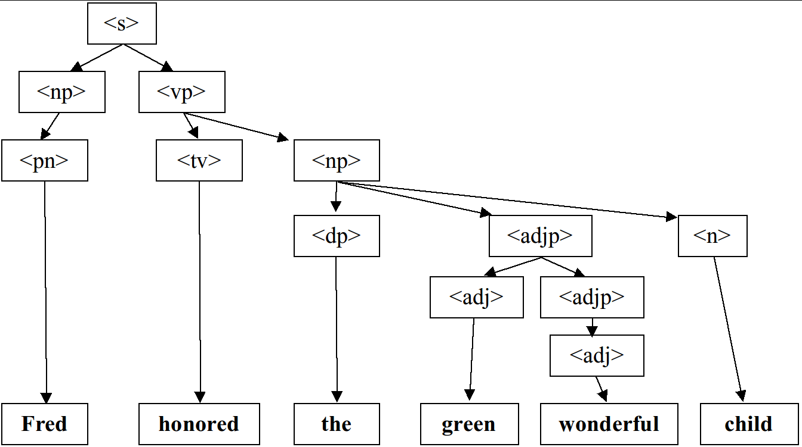

Stanford CS 106X: Grammar Solver
Assignment by Marty Stepp and Victoria Kirst.
Based on a problem by Stuart Reges of U of Washington.
This problem focuses on recursion.
This is an individual assignment.
Write your own solution and do not work in a pair/group on this program.
Files and Links:
:
-
 /icon_cpp.gif" class="icon" alt="icon" />
grammarsolver.cpp
/icon_cpp.gif" class="icon" alt="icon" />
grammarsolver.cpp
-
/icon_txt.gif" class="icon" alt="icon" />
mygrammar.txt
Problem Description:
For this part you will write a function for generating random sentences from a grammar.
Vector<string> grammarGenerate(istream& input, string symbol, int times)
Your function accepts a reference to an input file representing a language grammar, along with a symbol to randomly generate and the number of times to generate it.
Your function should generate the given number of random expansions of the given symbol and return them as a Vector of strings.
A formal language is a set of words and/or symbols along with a set of rules, collectively called the syntax of the language, defining how those symbols may be used together.
A grammar is a way of describing the syntax and symbols of a formal language.
Even programming languages have grammars; here is a link to a .
Many language grammars are described in a format called , which is what we'll use on this assignment.
In BNF, some symbols in a grammar are called terminals because they represent fundamental words of the language.
A terminal in English might be "boy" or "run" or "Mariana".
Other symbols of the grammar are called non-terminals and represent high-level parts of the language syntax, such as a noun phrase or a sentence.
Every non-terminal consists of one or more terminals; for example, the verb phrase "throw a ball" consists of three terminal words.
The BNF description of a language consists of a set of derivation rules, where each rule names a symbol and the legal transformations that can be performed between that symbol and other constructs in the language.
For example, a BNF grammar for the English language might state that a sentence consists of a noun phrase and a verb phrase, and that a noun phrase can consist of an adjective followed by a noun or just a noun.
Rules can be described recursively (in terms of themselves).
For example, a noun phrase might consist of an adjective followed by another noun phrase, such as the phrase "big green tree" which consists of the adjective "big" followed by the noun phrase "green tree".
A BNF grammar is specified as an input file containing one or more rules, each on its own line, of the form:
non-terminal ::= rule|rule|rule|...|rule
A separator of ::= (colon colon equals) divides the non-terminal from its expansion rules.
There will be exactly one such ::= separator per line.
A | (pipe) separates each rule; if there is only one rule for a given non-terminal, there will be no pipe characters.
Each rule will consist of one or more whitespace-separated tokens.
The following is a valid example BNF input file describing a small subset of the English language.
Non-terminal names such as <s>, <np> and <tv> are short for linguistic elements such as sentences, noun phrases, and transitive verbs.
<s>::=<np> <vp>
<np>::=<dp> <adjp> <n>|<pn>
<dp>::=the|a
<adjp>::=<adj>|<adj> <adjp>
<adj>::=big|fat|green|wonderful|faulty|subliminal|pretentious
<n>::=dog|cat|man|university|father|mother|child|television
<pn>::=John|Jane|Sally|Spot|Fred|Elmo
<vp>::=<tv> <np>|<iv>
<tv>::=hit|honored|kissed|helped
<iv>::=died|collapsed|laughed|wept
Sample input file sentence.txt
This grammar's language can represent sentences such as "The fat university laughed" and "Elmo kissed a green pretentious television".
This grammar cannot describe the sentence "Stuart kissed the teacher" because the words "Stuart" and "teacher" are not part of the grammar.
It also cannot describe "fat John collapsed Spot" because there are no rules that permit an adjective before the proper noun "John", nor an object after intransitive verb "collapsed".
Though the non-terminals in the previous example language are surrounded by < >, this is not required.
By definition any token that ever appears on the left side of the ::= of any line is considered a non-terminal, and any token that appears only on the right-hand side of ::= in any line(s) is considered a terminal.
Do not assume that non-terminals will be surrounded by < > in your code.
Each line's non-terminal will be a non-empty string that does not contain any whitespace.
You may assume that individual tokens in a rule are separated by a single space, and that there will be no outer whitespace surrounding a given rule or token.
Your grammarGenerate function will perform two major tasks:
-
read an input file with a grammar in Backus-Naur Form and turns its contents into a data structure; and
-
randomly generate elements of the grammar (recursively)
You may want to separate these steps into one or more helper function(s), each of which performs one step.
It is important to segregate the recursive part of the algorithm away from the non-recursive part.
You are given a client program that does the user interaction.
The main function supplies you with an input file stream to read the BNF file.
Your code must read in the file's contents and break each line into its symbols and rules so that it can generate random elements of the grammar as output.
When you generate random elements, you store them into a Vector which is returned.
The provided main program loops over the vector and prints the elements stored inside it.
Example Logs of Execution:
Your program should exactly reproduce the format and general behavior demonstrated in this log, although you may not exactly recreate this scenario because of the randomness that your code performs.
(Don't forget to use the course File → Compare Output... feature in the console, or the course web site's Output Comparison Tool, to check output for various test cases.)
Grammar file name? sentence.txt
Symbol to generate (Enter to quit)? <dp>
How many to generate? 3
1: the
2: the
3: a
Symbol to generate (Enter to quit)? <np>
How many to generate? 5
1: a wonderful father
2: the faulty man
3: Spot
4: the subliminal university
5: Sally
Symbol to generate (Enter to quit)? <s>
How many to generate? 7
1: a green green big dog honored Fred
2: the big child collapsed
3: a subliminal dog kissed the subliminal television
4: Fred died
5: the pretentious fat subliminal mother wept
6: Elmo honored a faulty television
7: Elmo honored Elmo
Expected output:
Here are some additional expected output files to compare.
It's hard to match the expected output exactly because it is random.
But your function should return valid random results as per the grammar that was given to it.
Your program's graphical Console window has a File → Compare Output feature for checking your output.
We have also written a Grammar Verifier web tool where you can paste in the randomly generated sentences and phrases from your program, and our page will do its best to validate that they are legal phrases that could have come from the original grammar file.
This isn't a perfect test, but it is useful for finding some kinds of mistakes and bugs.
Now that you've seen an example of the program's behavior, let's dive into the implementation details of your algorithm.
Part 1: Reading the Input File
For this program you must store the contents of the grammar into a Map.
As you know, maps keep track of key/value pairs, where each key is associated with a particular value.
In our case, we want to store information about each non-terminal symbol.
So the non-terminal symbols become keys and their rules become values.
Other than the Map requirement, you are allowed to use whatever constructs you need from the Stanford C++ libraries.
You don't need to use recursion on this part of the algorithm; just loop over the file as needed to process its contents.
One problem you will have to deal with early in this program is breaking strings into various parts.
To make it easier for you, the Stanford library's library provides a stringSplit function that you can use on this assignment:
Vector<string> stringSplit(string s, string delimiter)
The string split function breaks a large string into a Vector of smaller string tokens; it accepts a delimiter string parameter and looks for that delimiter as the divider between tokens.
Here is an example call to this function:
string s = "example;one;two;;three";
Vector<string> v = stringSplit(s, ";");
The parts of a rule will be separated by whitespace, but once you've split the rule by spaces, the spaces will be gone.
If you want spaces between words when generating strings to return, you must concatenate those yourself.
If you find that a string has unwanted spaces around its edges, you can remove them by calling the trim function, also from "strlib.h":
string s2 = " hello there sir ";
s2 = trim(s2);
Part 2: Generating Random Expansions from the Grammar
As mentioned previously, producing random grammar expansions is a two-step process.
The first step involves reading the input grammar file and turning it into an appropriate data structure (non-recursively).
The second step involves recursively walking that data structure to generate elements by successively expanding them.
Generate elements of a grammar with a recursive algorithm.
To generate a random occurrence of a symbol S:
-
If S is a terminal symbol, there is nothing to do; the result is the symbol itself.
-
If S is a non-terminal symbol, choose a random expansion rule R for S,
and for each of the symbols in that rule R, generate a random occurrence of that symbol.
For example, the grammar on the previous page could be used to randomly generate a <s> non-terminal for the sentence, "Fred honored the green wonderful child", as shown in the following diagram.

Random expansion from sentence.txt grammar for symbol <s>
If the string passed to your function is a non-terminal in your grammar, use the grammar's rules to recursively expand that symbol fully into a sequence of terminals.
For example, using the grammar on the previous pages, a call of grammarGenerate("<np>") might potentially return the string, "the green wonderful child".
Generating a non-terminal involves picking one of its rules at random and then generating each part of that rule, which might involve more non-terminals to recursively generate.
For each of these you pick rules at random and generate each part, etc.
When you encounter a terminal, simply include it in your string.
This becomes a base case.
If the string passed to your function is not a non-terminal in your grammar, you should assume that it is a terminal symbol and simply return it.
For example, a call of grammarGenerate("green") should just return "green".
(Without any spaces around it.)
Special cases to handle:
You should throw a string exception if the grammar contains more than one line for the same non-terminal.
For example, if two lines both specified rules for symbol "<s>", this would be illegal and should result in the exception being thrown.
You should throw a string exception if the symbol parameter passed to your function is empty, "".
Testing:
The provided input files and main may not test all of the above cases; it is your job to come up with tests for them.
Your function may assume that the input file exists, is non-empty, and is in a proper valid format.
If the number of times passed is 0 or less, return an empty vector.
Implementation Details:
The hardest part is the recursive generation, so make sure you have read the input file and built your data structure properly before tackling the recursive part.
The directory crawler program from lecture is a good guide.
Loops are not forbidden in this part of the assignment.
In fact, you should definitely use loops for some parts of the code where they are appropriate.
The directory crawler example from class uses a for-each loop.
This is perfectly acceptable; if you find that part of this problem is easily solved with a loop, please use one.
In the directory crawler, the hard part was traversing all of the different sub-directories, and that's where we used recursion.
For this program the hard part is following the grammar rules to generate all the parts of the grammar, so that is the place to use recursion.
If your recursive function has a bug, try putting a cout statement at the start of your recursive function that prints its parameter values, to see the calls being made.
Look up the randomInteger function from to help you make random choices between rules.
Style Details:
(These are the same as in the Fractals problem.)
As in other assignments, you should follow our for information about expected coding style.
You are also expected to follow all of the general style constraints emphasized in the Homework 1 and 2 specs, such as the ones about good problem decomposition, parameters, using proper C++ idioms, and commenting.
The following are additional points of emphasis and style contraints specific to this problem:
Recursion:
Part of your grade will come from appropriately utilizing recursion to implement your algorithm as described previously.
We will also grade on the elegance of your recursive algorithm; don't create special cases in your recursive code if they are not necessary.
Avoid "arm's length" recursion, which is where the true base case is not found and unnecessary code/logic is stuck into the recursive case.
Redundancy in recursive code is another major grading focus; avoid repeated logic as much as possible.
As mentioned previously, it is fine (sometimes necessary) to use "helper" functions to assist you in implementing the recursive algorithms for any part of the assignment.
Variables:
While not new to this assignment, we want to stress that you should not make any global or static variables (unless they are constants declared with the const keyword).
Do not use globals as a way of getting around proper recursion and parameter-passing on this assignment.
Creative Aspect, mygrammar.txt:
Along with your code, submit a file mycolony.txt that contains a BNF grammar that can be used as input.
For full credit, the file should be in valid BNF format, contain at least 5 non-terminals, and should be your own work (do more than just changing the terminal words in sentence.txt, for example).
This is worth a small part of your grade.
Frequently Asked Questions (FAQ):
For each assignment problem, we receive various frequent student questions.
The answers to some of those questions can be found by clicking the link below.
Here are some ideas for extra features that you could add to your program:
Indicating that you have done extra features:
If you complete any extra features, then in the comment heading on the top of your program, please list all extra features that you worked on and where in the code they can be found (what functions, lines, etc. so that the grader can look at their code easily).
Submitting a program with extra features:
Since we use automated testing for part of our grading process, it is important that you submit a program that conforms to the preceding spec, even if you want to do extra features.
If your feature(s) cause your program to change the output that it produces in such a way that it no longer matches the expected sample output test cases provided, you should submit two versions of your program file:
a first one with the standard file name without any extra features added (or with all necessary features disabled or commented out), and a second one whose file name has the suffix -extra.cpp with the extra features enabled.
Please distinguish them in by explaining which is which in the comment header.
Our turnin system saves every submission you make, so if you make multiple submissions we will be able to view all of them; your previously submitted files will not be lost or overwritten.